Получить навыки настройки базовых и специальных прав доступа для
групп пользователей в операционной системе типа Linux
Изучить механизмы работы с правами доступа и ACL
Теоретическая справка
Права доступа в Linux
Основные понятия: - chmod — изменение прав доступа -
chgrp — изменение группы-владельца - ACL —
списки контроля доступа - Sticky-bit — специальный бит для общих
каталогов
Работа в учётной записи root
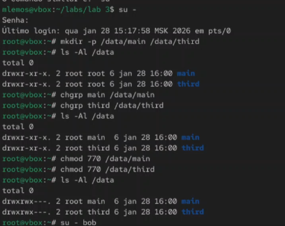
Рис. 1. Открытие учётной записи (su -),
создание каталогов (mkdir -p), просмотр владельцев каталогов (ls -Al),
изменение владельцев каталогов (chgrp), установка разрешений
(chmod)
Работа в учётной записи пользователя bob
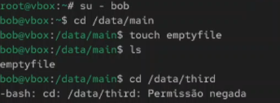
Рис. 2. Открытие учётной записи
пользователя bob, переход и проверка по каталогам main и third, создание
новых файлов
Работа в учётной записи пользователя alice
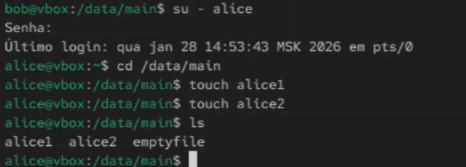
Рис. 3. Открытие учётной записи
пользователя alice, переход в каталог main, создание двух файлов,
проверка
Проверка файлов под пользователем bob
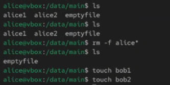
Рис. 4. Проверка созданных файлов под
пользователем bob, удаление файлов, создание двух новых
файлов
Установка специальных битов
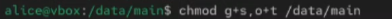
Рис. 5. Открытие терминала под
пользователем root, установка бит идентификатора группы, а также
sticky-бита для разделяемого (общего) каталога группы
Работа под пользователем alice
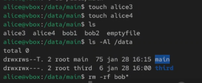
Рис. 6. Открытие терминала под
пользователем alice, создание в каталоге main двух новых файлов,
проверка принадлежности файлов группе main и попытка удаления файлов
пользователя bob
Установка прав r-x
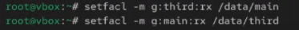
Рис. 7.1. Открытие терминала с учётной
записью root, установка прав на чтение и выполнение
Создание нового файла
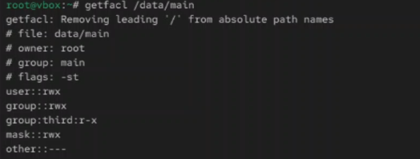
Рис. 8. Создание нового файла и проверка
текущих назначений полномочий
Установка ACL по умолчанию
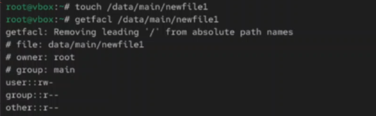
Рис. 9.1. Установка ACL по умолчанию для
двух каталогов, добавление нового файла в каталог main и проверка
текущих назначений полномочий
Проверка ACL в каталоге third
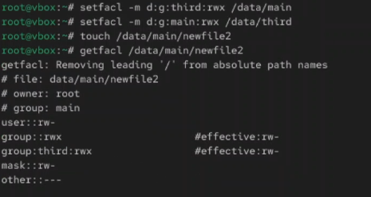
Рис. 9.2. Добавление нового файла в
каталог third и проверка текущих назначений полномочий
Работа с пользователем carol
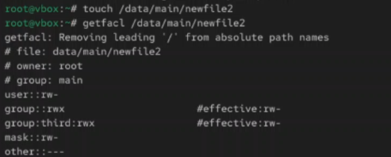
Рис. 10. Открытие терминала под
пользователем carol и проверка операций с файлами
Создание дополнительных файлов
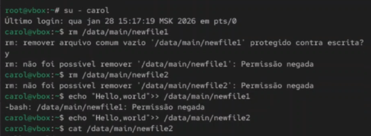
Рис. 11. Создание дополнительных файлов
для проверки прав доступа
Проверка ACL
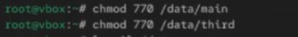
Рис. 12. Проверка настроек ACL для
каталогов main и third
Изменение прав доступа
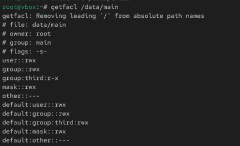
Рис. 13. Изменение прав доступа для групп
пользователей
Проверка Sticky-бита
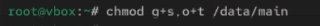
Рис. 14. Проверка работы Sticky-бита в
общем каталоге
Результаты настройки прав
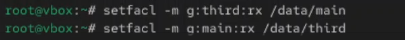
Рис. 15. Итоговая проверка настроек прав
доступа
Вывод
В ходе выполнения лабораторной работы были получены навыки настройки
базовых и специальных прав доступа для групп пользователей в
операционной системе типа Linux. Освоены команды chmod,
chgrp, работа с ACL и Sticky-битом.
Список литературы
[1] Linux man pages: chmod(1), chgrp(1), setfacl(1), getfacl(1)